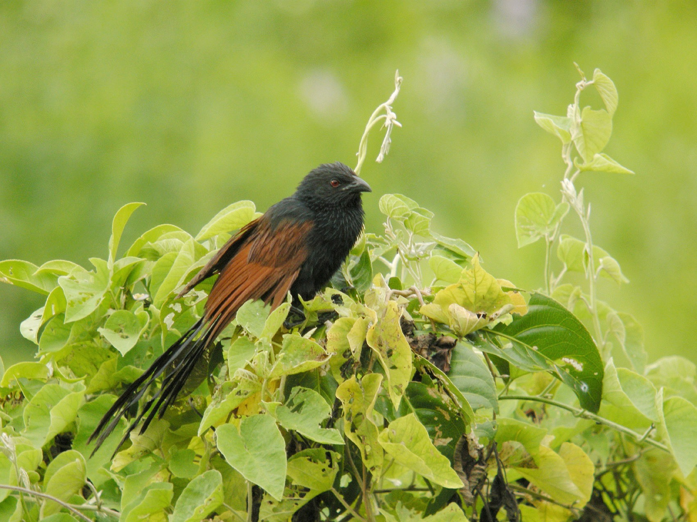

Centropus toulou
The Madagascar Coucal is a medium sized bird with the adult length being in the range 40 to 50 cm (16 to 20 in). The male is smaller than the female, weighing about 140 g (5 oz) less than the females 190 g (7 oz) but other than that it's hard to distinguish the different genders.